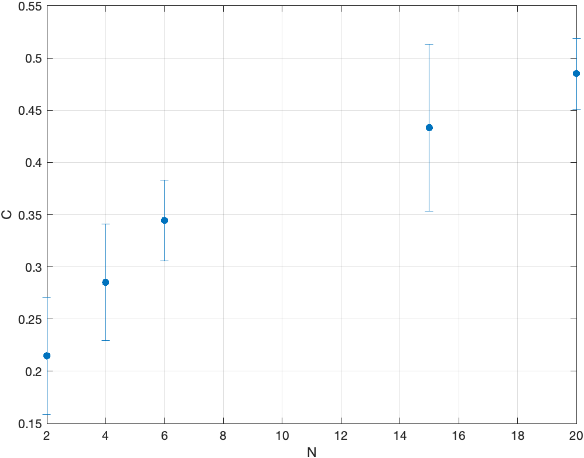
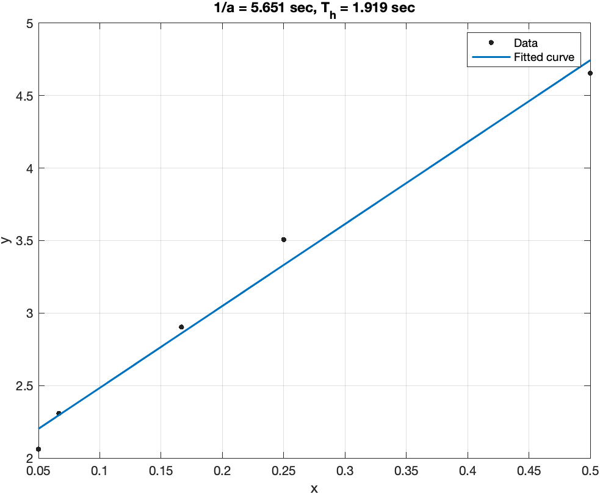
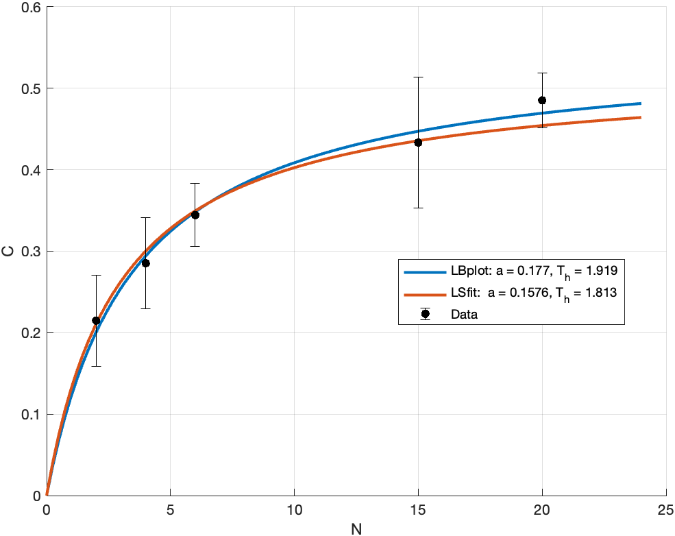
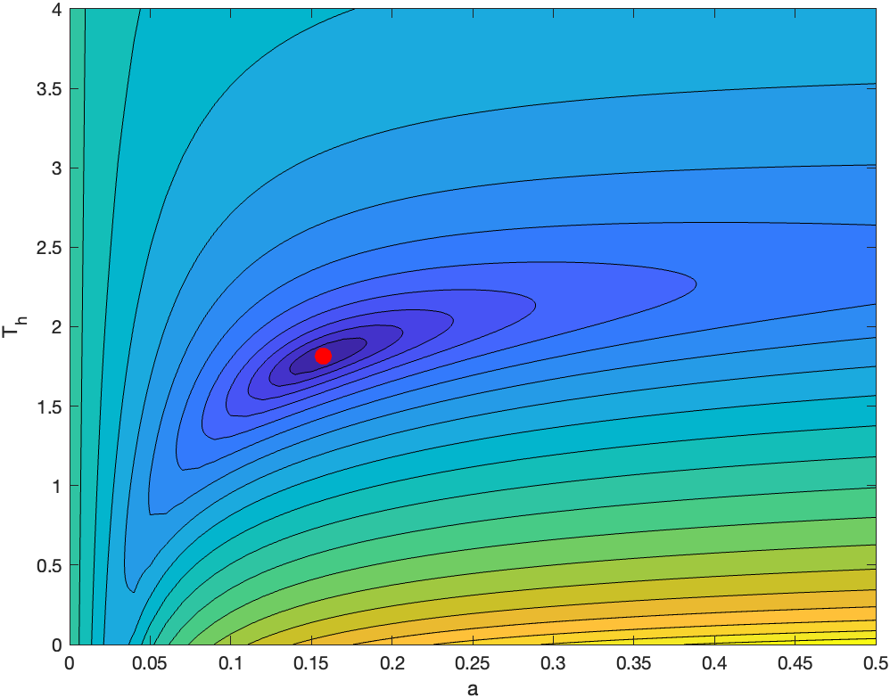
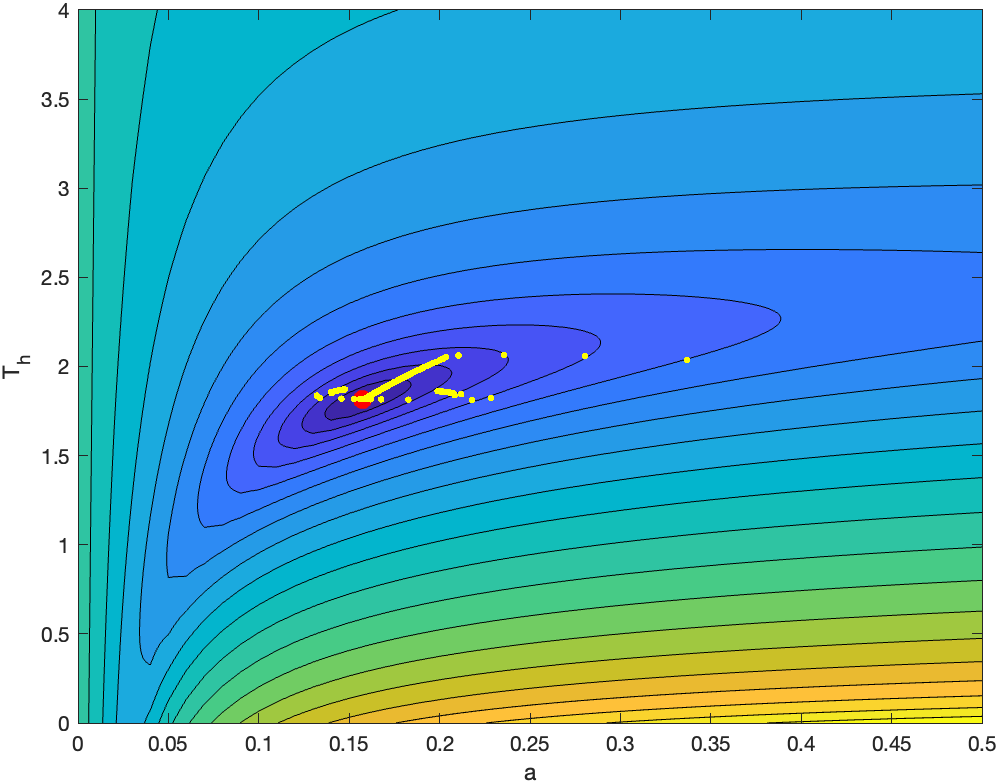
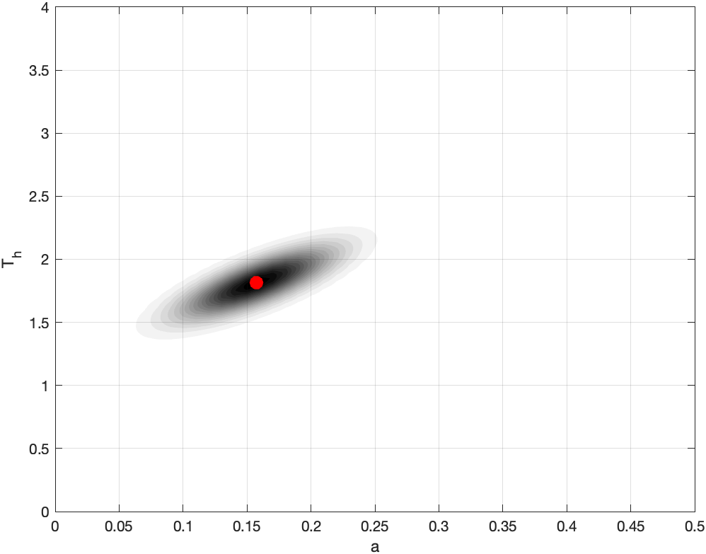
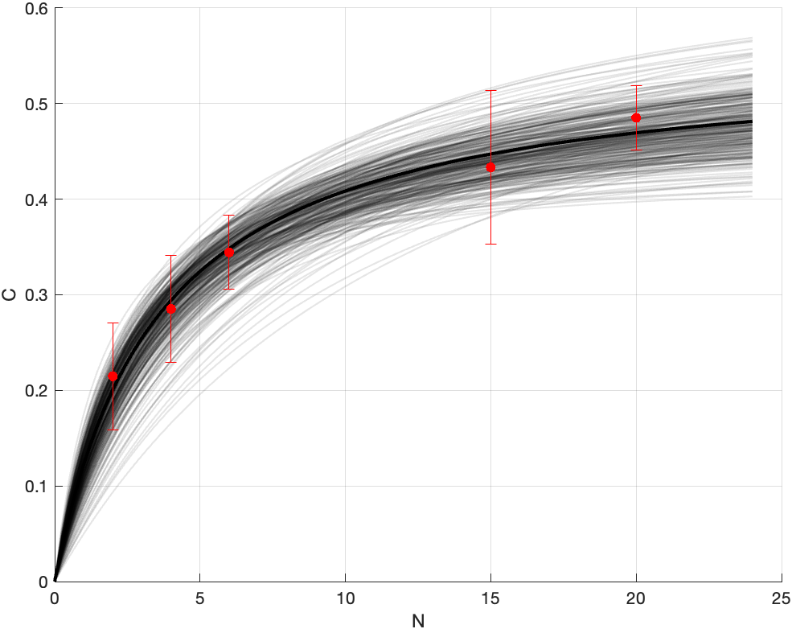

Lab 07: Parameter fitting
Holling type II
We continue here the analysis of the experimental data from the “CandyLab”. Data is here: CandyLab spreadsheet. You can download the file as .xlsx.
The objective is to fit the following function: \[ \frac{C}{T} = \frac{a N}{1 + a T_h N} \]
where \(T = 90\,\text{sec}\), \(C\) is the number of “captured” candies, and \(N\) is the number of candies on the table (the density of prey). The unknown parameters are:
- \(a>0\), the predation rate,
- \(T_h>0\), the handling time.
Import data
Before trying any fitting, we need to import the data into a software. Save and download the spreadsheet as .xslx format.
In MATLAB, you can use the Import Data button. Otherwise, this should work:
sheet_num = 3; % <- select yours
data = readtable('CandyLab.xlsx','Sheet',sheet_num);You can access the variables with data.Candies, for instance. Just type data to see all variables.
Plot the results \(C/T\) versus \(N\). Be careful in filtering NaNs (use isnan) and recompute the average and standard deviation.
When reading the data, be careful that you don’t have NaN (MATLAB filters them automatically in the plot).
data = readtable('CandyLab.xlsx','Sheet',3);
N = data.Candies;
Cdata = [data.N1,data.N2,data.N3];
T = 90; % seconds
Cdata = Cdata/T; % candies per second [predation rate]
C = mean(Cdata,2); % recompute mean
Cstd = std(Cdata,[],2); % std-dev
% confidence interval
ci = 2*(Cstd/sqrt(size(C,2)));
errorbar(N,C,ci,'.','MarkerSize',16);
xlabel('N'); ylabel('C');
grid on;
Fitting via Lineweaver–Burk plot
The Lineweaver–Burk plot uses a simple transformation to make the above equation linear. In fact: \[ y = \frac{T}{C} = \frac{1}{a} \frac{1}{N} + T_h = \alpha x + \beta. \]
So, the Holling type II relationship is linear with respect to the reciprocal. Perform a linear regression to find the coefficients (use polyfit, fit, or Tools->Basic Fitting in the menu bar of the plot window). Compare the estimated value of \(T_h\) with the one measured by you. Explain possible differences.
The code is:
x = 1./N;
y = 1./C;
p = polyfit(x,y,1);
a = 1/p(1);
Th = p(2);
% another option, this is easier for plotting
f = fit(x,y,'poly1');
plot(f,x,y);
grid on;
title(sprintf('1/a = %.4g sec, T_h = %.4g sec',p(1),p(2)));
For this particular case, the estimated \(T_h\) is \(1.9\,\text{sec}\), while the computation done by you using the stopwatch is
mean(data.HandlingTime)around \(1.42\pm 0.13\,\text{sec}\). It’s the same order of magnitude, and not too far.
Nonlinear least squares
We can approach the problem as follows: find \((a,T_h)\) such that \[ g(a,T_h) := \sum_{i=1}^3 \left( \frac{C_i}{T} - \frac{a N_i}{1 + a T_h N_i} \right)^2 \quad\to\quad\min. \]
This problem can be solved via optimization. In MATLAB, you can use lsqnonlin function, in Python scipy.optimize.curve_fit. Check the documentation.
holl = @(N,a,Th) a.*N./(1+a.*Th.*N);
res = @(p) holl(N,p(1),p(2)) - C; % residuals
opt = lsqnonlin(res,[a,Th]);
Ns = linspace(1,24);
figure; hold on;
plot(Ns, holl(Ns,opt(1),opt(2)),'LineWidth',2);
plot(Ns, holl(Ns,1/p(1),p(2)),'LineWidth',2);
plot(N,C,'k.','MarkerSize',16);
legend(sprintf('LBplot: a = %g, T_h = %g',a,Th), ...
sprintf('LSfit: a = %g, T_h = %g',opt(1),opt(2)), ...
'Data', ...
'Location','best');
xlabel('N'); ylabel('C');
grid on;
hold off;
Loss function
Try to visualize the function \(g(a,T_h)\). You can use the function arrayfun to vectorize the residual (or just do a for loop). Use the log scale to plot the contour of \(g\).
[A,TH] = meshgrid(0:0.02:0.5,0.0:0.02:4);
res2 = @(a,Th) norm(holl(N,a,Th) - C);
contourf(A,TH,log(arrayfun(res2,A,TH)),20);
xlabel('a'); ylabel('T_h');
hold on;
plot(opt(1),opt(2),'r.','MarkerSize',32);
The loss function looks convex and the minimum unique, which is a good sign.
Gradient descent
The function lsqnonlin is implementing an optimization procedure. Here, we would like to implement our own, based on gradient descent.
Given an initial guess \((a^{(0)},T_h^{(0)})\), we update with: \[ (a^{(k+1)},T_h^{(k+1)}) = (a^{(k)},T_h^{(k)}) - \eta \nabla g((a^{(k)},T_h^{(k)})), \]
where \(\eta>0\) is the step length or learning rate and \(\nabla g\) is the gradient with respect to \(a\) and \(T_h\).
Implement the method and check the converge for various values of \(\eta\). What could be a reasonable stopping criterium?
holl_grad = @(N,a,Th) [ N./((1+a.*Th.*N).^2), ...
-(a.*N).^2./((1+a.*Th.*N).^2) ];
res2 = @(a,Th) norm(holl(N,a,Th) - C)^2;
res_grad = @(a,Th) holl_grad(N,a,Th)' * res([a,Th]);
contourf(A,TH,log(arrayfun(res2,A,TH)),20);
xlabel('a'); ylabel('T_h');
hold on;
plot(opt(1),opt(2),'r.','MarkerSize',32);
% gradient descent
p = [0.4,2];
eta = 0.2;
for k = 1:300
p = p - eta*res_grad(p(1),p(2))';
plot(p(1),p(2),'y.','MarkerSize',8);
end
A standard stopping criterium is the norm of the gradient: when it is close to zero, we are close to a stationary point.
Uncertainty quantification
How sure we are of the fitting? Here, we fitted the data to the mean, and the mean will vary if we’d perform more experiments. In turn, also the fitting will change. What is the probability distribution of the parameters, given the probability distribution of the noise?
A possibility is to use a Bayesian viewpoint. We assume some prior knowledge on the parameters, we check the predictions through the likelihood, and the compute the posterior distribution according to the Bayes’ Theorem. With the simplest model of noise, we have: \[ C_i/T - \frac{a N_i}{1 + a T_h N_i} = \varepsilon \sim \mathcal{N}(0,\sigma^2), \]
assuming that measurements are i.i.d. The likelihood is: \[ \mathcal{L}_D(a,T_h) = \prod_{i=1}^K \frac{1}{\sqrt{2\pi\sigma^2}} e^{-\frac{1}{2\sigma^2}\left(C_i/T - \frac{a N_i}{1 + a T_h N_i}\right)^2} \]
where \(K\) is the number of measurements and \(D = \{ (C_i,N_i) \}_{i=1}^K\) is the data. Bayes’ formula gives us the posterior: \[ \rho_\text{post}(a,T_h|D) = \frac{\mathcal{L}_D(a,T_h) \rho_\text{prior}(a,T_h)}{\rho(D)}, \]
where \(\rho(\cdot)\) is the probability density function. Now we can maximize the posterior distribution to find the Maximum A-posteriori Estimator (MAP): \[ a^\text{MAP}, T_h^\text{MAP} = \arg\max \rho_\text{post}(a,T_h|D). \]
There is a simple case. If \(\rho_\text{prior}\) is uninformative, like a uniform distribution, it does not depend on \(a\) and \(T_h\) so we can ignore it. We can simply maximize the likelihood, leading to the so-called Maximum Likelihood Estimator (MLE). Equivalently, we can minimize \(-\log\mathcal{L}_D\), that is: \[ -\log\mathcal{L}_D = \text{constant} + \frac{1}{2\sigma^2} \sum_{i=1}^K \left(C_i/T - \frac{a N_i}{1 + a T_h N_i}\right)^2 = c + \frac{1}{2\sigma^2}g(a,T_h). \]
Thus, we already know the MLE, because it is provided by the minimum of \(g\).
We can further simply the model with the Laplace approximation. Let us define \(\theta = (a,T_h)\). Setting \(\theta^\text{MLE} = (a^\text{MLE},T_h^\text{MLE})\) we have: \[ g(\theta) \approx g(\theta^\text{MLE}) + \underbrace{\nabla g(\theta^\text{MLE})}_{=0}\cdot(\theta- \theta^\text{MLE}) + \frac{1}{2} (\theta-\theta^\text{MLE})\cdot \nabla^2 g(\theta^\text{MLE})(\theta-\theta^\text{MLE}). \]
The Hessian \(\nabla^2 g(\theta^\text{MLE})\) is positive definite, because \(\theta^\text{MLE}\) is a minimum. Thus, \(g(\theta)\) is approximately a quadratic function in \(\theta\). Going back to the likelihood: \[ \mathcal{L}_D(\theta) = \frac{1}{\sqrt{2\pi\sigma^2}} e^{-\frac{1}{2\sigma^2}g(\theta)} = \frac{1}{\sqrt{2\pi\sigma^2}} e^{-\frac{1}{2\sigma^2} g(\theta^\text{MLE})} e^{-\frac{1}{2\sigma^2}(\theta-\theta^\text{MLE}) \cdot \nabla^2 g(\theta^\text{MLE})(\theta-\theta^\text{MLE})} \]
The posterior distribution is: \[ \rho_\text{post}(\theta) = \frac{1}{\sqrt{2\pi\sigma^2}} e^{-\frac{1}{2\sigma^2}(\theta-\theta^\text{MLE}) \cdot \nabla^2 g(\theta^\text{MLE})(\theta-\theta^\text{MLE})} \]
If we define \(H = \frac{1}{\sigma^2} \nabla^2 g(\theta^\text{MLE})\) (the Fisher information), then the distribution of the posterior is \[ \theta \sim \mathcal{N}(\theta^{MLE}, H^{-1}). \]
Compute the covariance matrix. Sample from the posterior the parameters and plot the curves.
We can nicely visualize the distribution with the following script:
sigma2 = mean(var(Cdata,[],2));
g = holl_grad(N,opt(1),opt(2));
H = 1/(2*sigma2)*(g' * g);
Sigma = inv(H);
eig(Sigma)
theta = [A(:) TH(:)];
z = mvnpdf(theta,opt,Sigma);
z = reshape(z,size(A));
contourf(A,TH,z,20,'LineStyle','none');
colormap(flipud(gray));
xlabel('a'); ylabel('T_h');
hold on;
plot(opt(1),opt(2),'r.','MarkerSize',32);
grid on;
Concerning the sampling, we have:
figure; hold on; grid on;
plot(Ns, holl(Ns,opt(1),opt(2)),...
'LineWidth',2,'Color',[0,0,0]);
v = [];
for k = 1:300
ps = mvnrnd(opt,Sigma);
if (ps(1)<0||ps(2)<0), continue, end
plot(Ns, holl(Ns,ps(1),ps(2)),...
'LineWidth',1,'Color',[0,0,0,0.1]);
v = [v,holl(15,ps(1),ps(2))];
end
errorbar(N,C,ci,'r.','MarkerSize',16);
xlabel('N'); ylabel('C');